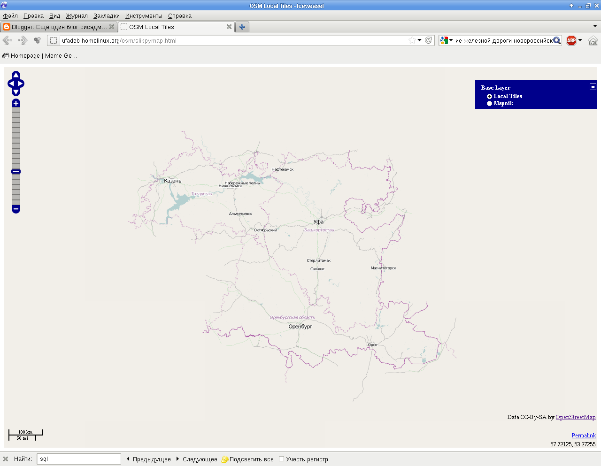

Продолжение серии заметок, посвящённых настройке тайлового сервера. Смотрите также предыдущие заметки Подготовка карт для генератора тайлов Mapnik, Настройка базы данных для генератора тайлов Mapnik и Установка генератора тайлов Mapnik. На этот раз мы установим демон renderd и модуль mod_tile для веб-сервера Apache.
Скачиваем дистрибутив модуля mod_tile для apache2 и его бэкенд - демон renderd. mod_tile работает вместе с renderd. Когда браузер пользователя запрашивает тайл у веб-сервера apache2, запрос перенаправляется модулю mod_tile. Если mod_tile находит в кэше нужный тайл, и судя по метаинформации и настройкам кэширования, он не просрочен, mod_tile просто передаёт его apache2. Если же необходимый тайл отсутствует или просрочен, тогда mod_tile обращается по UNIX-сокету к renderd, чтобы тот отрисовал необходимый тайл, разместил его в файловой ситсеме и доложил о готовности тайла.
Скачиваем исходники модуля и демона:
$ svn co http://svn.openstreetmap.org/applications/utils/mod_tile/
Устанавливаем всё необходимое для его сборки:
# apt-get install debhelper apache2-mpm-prefork apache2-threaded-dev libmapnik2-dev autoconf automake m4 libtool
Собираем модуль и демон, и устанавливаем их:
$ cd mod_tile $ dpkg-buildpackage -B -rfakeroot -us -uc $ cd .. # dpkg -i renderd_0.4-10~oneiric1_amd64.deb # dpkg -i libapache2-mod-tile_0.4-10~oneiric1_amd64.deb
Редактируем файл конфигурации mod_tile /etc/apache2/sites-enabled/tileserver_site: пишем почтовый ящик администратора веб-сервера в опцию ServerAdmin, комментируем опции ServerName, ServerAlias.
Я также поменял порт с 80 на 8080 в опции VirtualHost, поскольку у меня Apache2 будет выступать в роли бэкэнда для более лёгкого сервера Lighttpd. Для этого я поменял порт Apache2 в файле /etc/ports.conf, в опциях NameVirtualHost и Listen.
Теперь нужно настроить renderd. Для этого откроем файл /etc/renderd.conf и поменяем значение опции plugins_dir в секции [mapnik] с /usr/lib/mapnik/0.7/input на /usr/lib/mapnik/2.0/input
Теперь можно перезапустить apache2 и renderd, чтобы их настройки вступили в силу:
# /etc/init.d/apache2 restart # /etc/init.d/renderd restart
Я также подключил модуль mod_proxy в файле конфигурации Lighttpd /etc/lighttpd/lighttpd.conf:
server.modules += ( "mod_proxy" )
proxy.server = (
"/osm/" =>
(
(
"host" => "127.0.0.1",
"port" => 8080
)
)
)
И перезапустил веб-сервер:
# /etc/init.d/lighttpd restart
Теперь, если всё сделано правильно, система должна заработать. Для того, чтобы убедиться в правильности настроек, поправим адрес сервера на тестовой странице /var/www/osm/slippymap.html - заменим с localhost на внешнее имя сервера servername.tld. Теперь в браузере переходим на страницу http://servername.tld/osm/slippymap.html и видим карту прямо из недр базы данных:
На этом настройка тайлового сервера закончена.